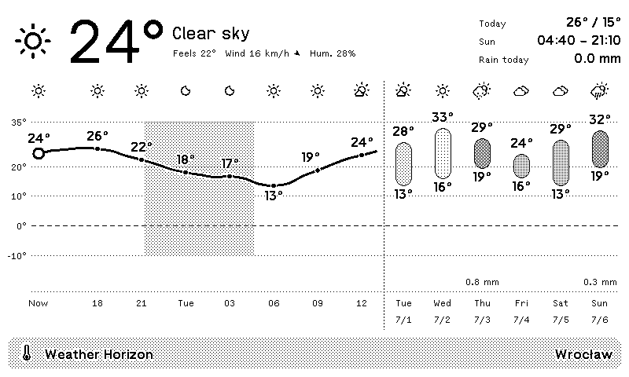
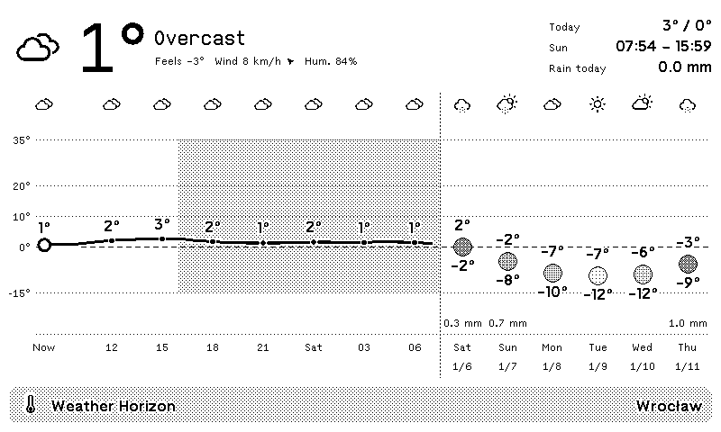
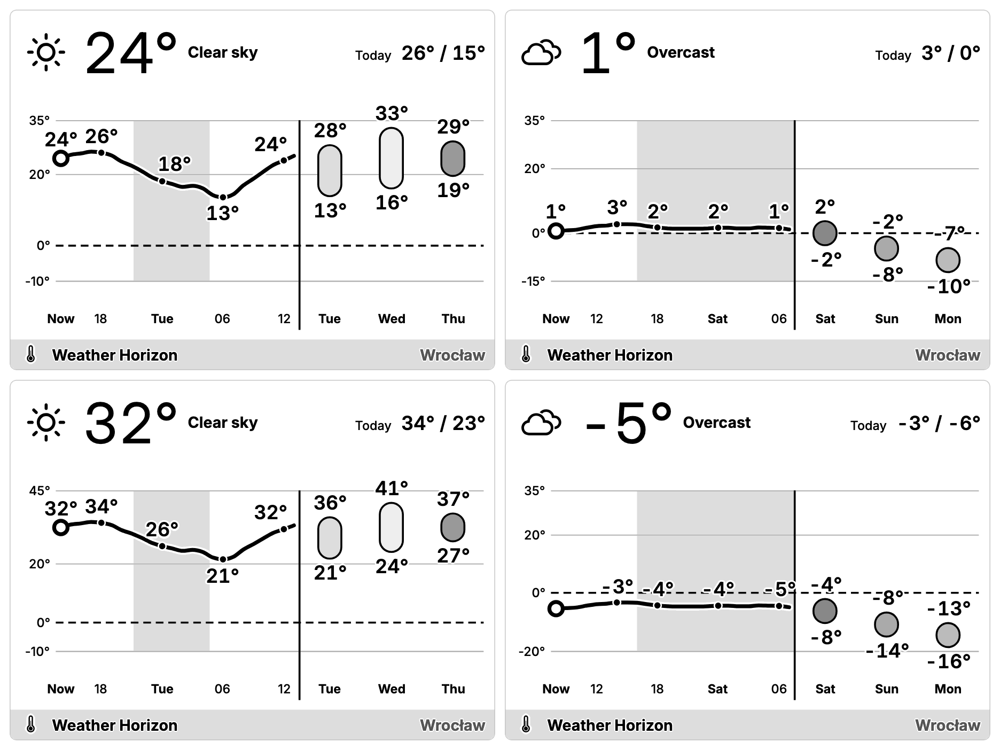

One scale, every season
Most weather charts stretch their axis to fit the data, so a mild day and a heatwave look the same. Weather Horizon keeps the axis still.
July sits high, January sits low, and the dashed freezing line is always in the same place — readable from across the room.



Made for e-ink
Crisp 1-bit patterns on the TRMNL OG, sixteen shades of gray on the TRMNL X, and pixel-perfect type on both.
Full screen, half screen, quadrants and portrait all work. Narrower layouts simply show fewer hours and days.
Make it yours
- English
- Deutsch
- Français
- Español
- Italiano
- Nederlands
- Português
- Polski
- Українська
- 日本語
By default the plugin follows your TRMNL account language.
Put it on your desk
Weather Horizon runs on TRMNL, a calm e-ink display that shows what matters without a glowing screen.
Get a TRMNL →